This time I prepared for myself a lot of interesting foods.
At 11:20 I took 1 sugar cube.
I cleaned the kitchen and then I started cleaning my plants' leaves while listening to music on headphones.
At 12:10 I started feeling it. It was tingling around the stomach a lot and I would yawn every few minutes.
When preparing for the trip I would mostly look forward to getting new insights, but now that it was acting I felt
this freedom to enjoy the moment. Knowledge can wait, I have years ahead of me. My hair is not even grey yet.
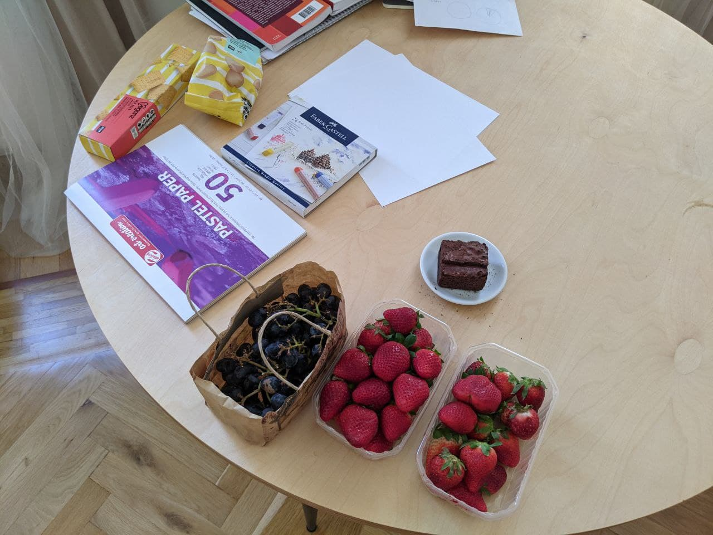
I don't remember how I found it, but somehow I played a song I've never heard before called "Stella splendens" by "Jordi Savall".
The sound was divine. I spent probably an hour listening to it on loop.
I bought myself a brownie. I'm not supposed to eat stuff like this, but I imagined it would be an experience.
I pressed on it with my fork to see the consistency and the top collapsed. It was beautiful. There was infinite structure.
It looked like a landslide. The kind of complexity that you see only in nature. I looked at it from up close and it felt immense.
I could imagine a person screaming for help on one of those crumbs. I tried to capture it with my phone, when I realized that I'm enjoying the process.
I never thought I would enjoy photography.
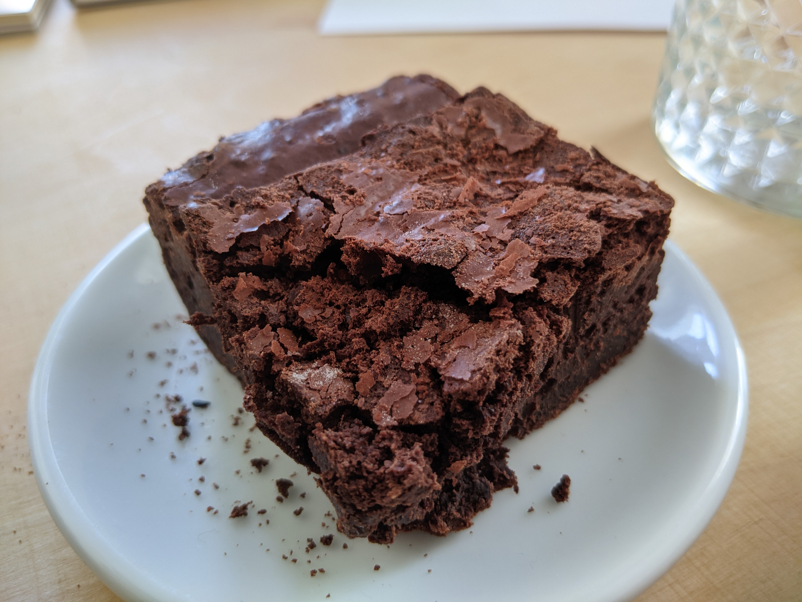
Finally color
I have bought myself a set of pastels, just a small one, to see if I liked it at all.
The colors were amazing. You could smear color on anything. And there was magic dust flying out of it.
Soon it got on my fingers and there would be traces of color everywhere. I noticed when I went to the bathroom
and the door had a lot of smudges of color.
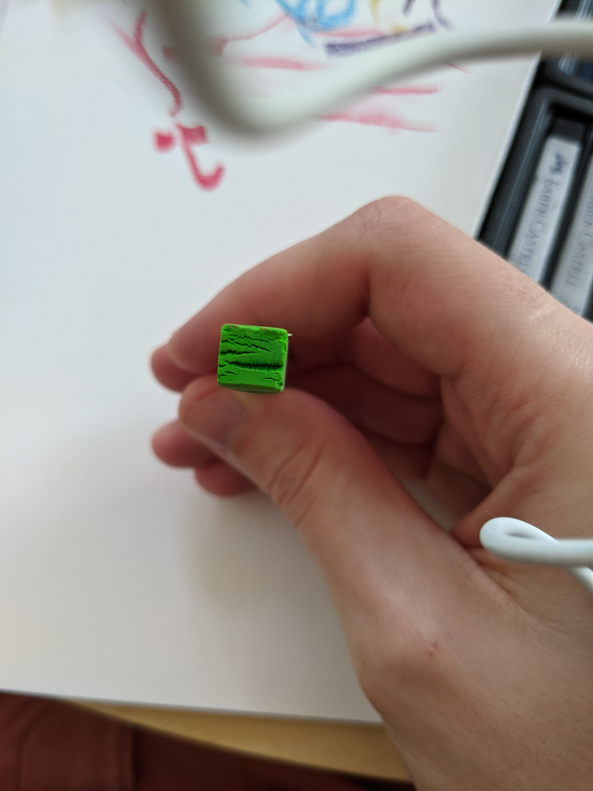
Unlike last time, this time I wanted to try to draw something of my own.
A lot of things that I wanted to capture bore a very saturated red color. The color of fire and blood.
It seemed like my set of pastels lacked this color. It drew me nuts for the rest of the day, I would frequently
take a pause to curse the ideator of this set of pastels.
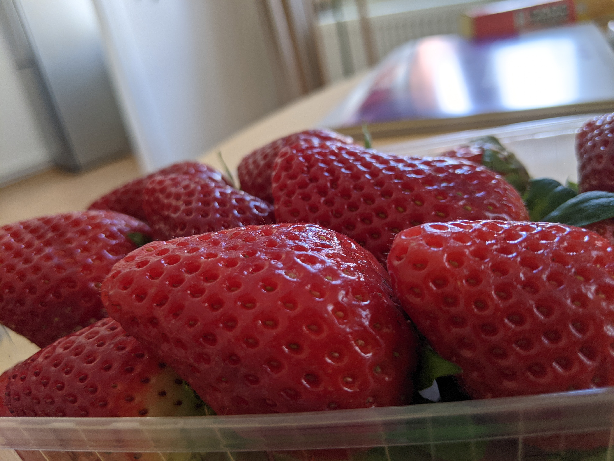
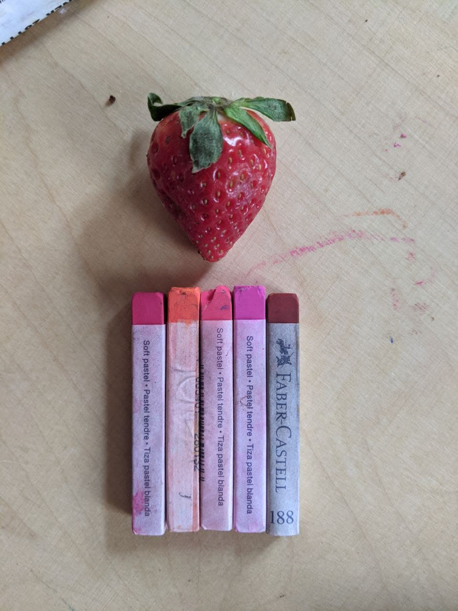
I looked at my hands and I saw them the way I used to see my parents' hands. You know how as a child you look at adult skin
and it seems like there's too much of it. It has too much structure. As if it was telling a story of it's own. It looks as if
it should have a strong smell and it dissipates a heat.
The color would stick really well to the hands.
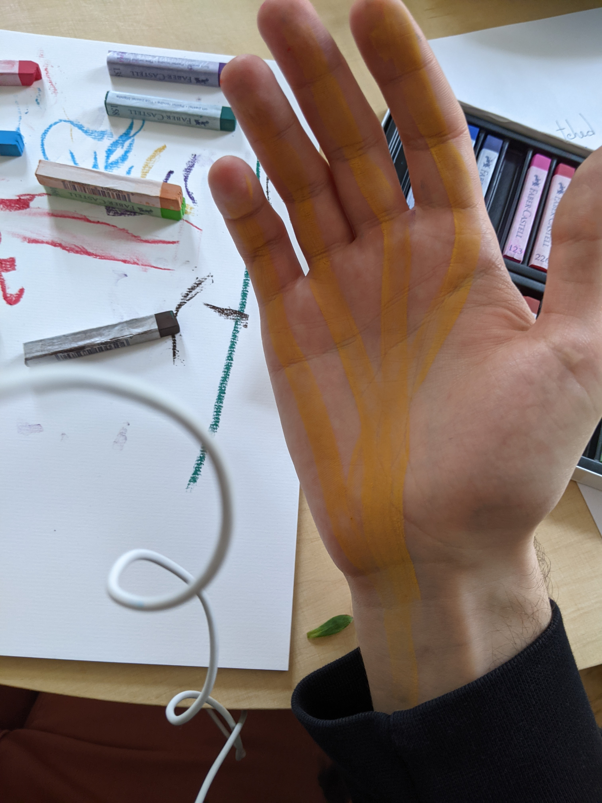
There was a moment when I realized I haven't spoken in a long time. I wrote down
Am I Mute?
.
Sudennly I realized most of the sentence lies in the question-mark. The question-mark colors the
whole sentence with this tone of uncertainty, so I started drawing an aura around it. Soon the whole
drawing was about the question mark. It was fitting.
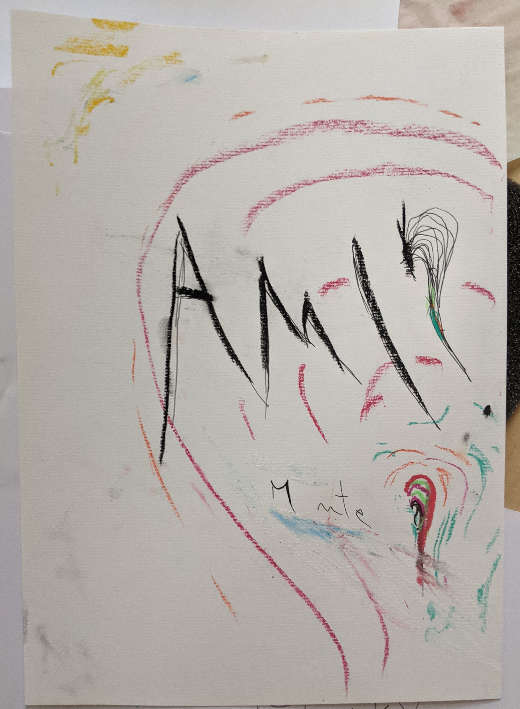
I think I like the second question mark even more. I don't remember how it got there. I like that the black lines
don't seem like anything that I would normally ideate.
Afternoon drawing with Grandma
I remembered an afternoon from my childhood. I was sitting in my grandparents' living room. Grandma was watching TV
and I was drawing with my brother. We would get unlimited paper and sharpies. I drew Zorro and the villains chasing him in uniforms.
Suddenly I felt how long that afternoon was. As if all of the life afterwards could fit into a single minute of that afternoon.
I drew a timeline. The different widths were supposed to express how life feels more and more compressed as you get older.
I wanted to capture a beginning and end. I drew a point at the end. But a point didn't feel like an end. I wanted it to
dissipate into nothing, so I drew something like an energy flame. On the other side the beginning was a place where something comes to existence from nothing.
Rays of energy from deep space converge into a single point.
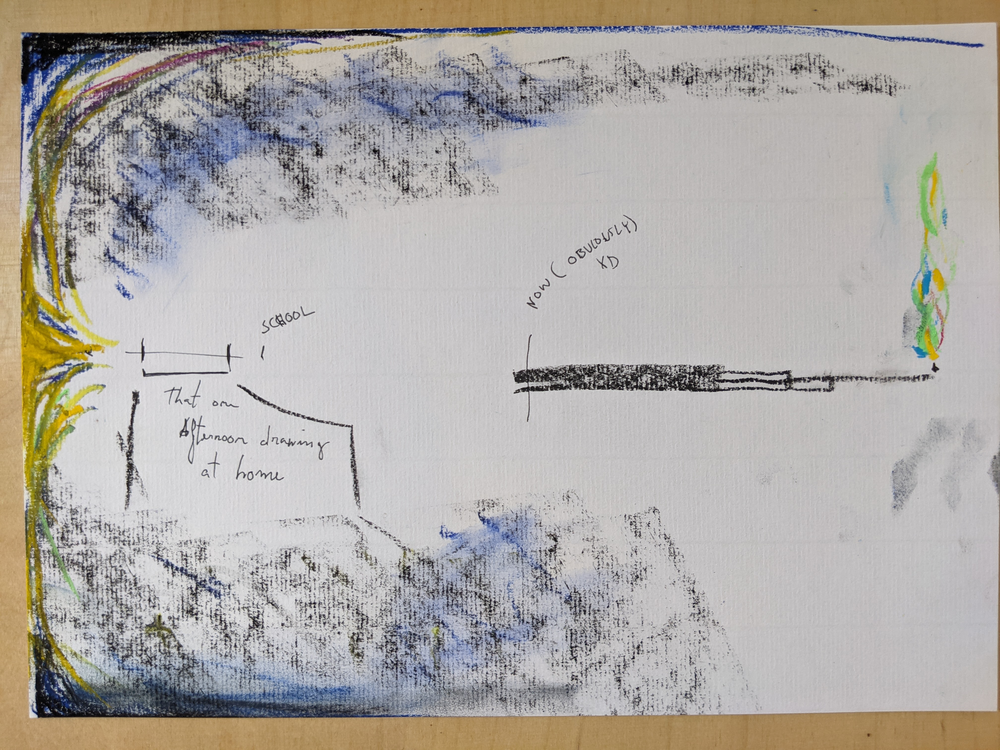
Opening a box
I tried to open a glass container and it was a very different experience than usually. I could feel the uncertainty.
Like the feeling of holding a knife for the first time. Now you cut a piece of bread just like you walk - without second thought.
But the first time you climbed a tree you didn't know which branch could break and leave you falling. There is this very strong
feeling of mortality that we loose as we grow older and learn which things are safe and exactly what to expect from each interaction.
The container had a plastic lid. One of those that create a really good seal. I tried to apply force on the locking mechanism and I could feel the pressure build up.
It felt like the increasing silence that you feel right before you burst screaming. I had a general feeling like I was doing it correctly,
but it was not reacting. Like a sneeze that won't happen. It was looong. Then it popped. I felt a great relief.
It was really stressful.
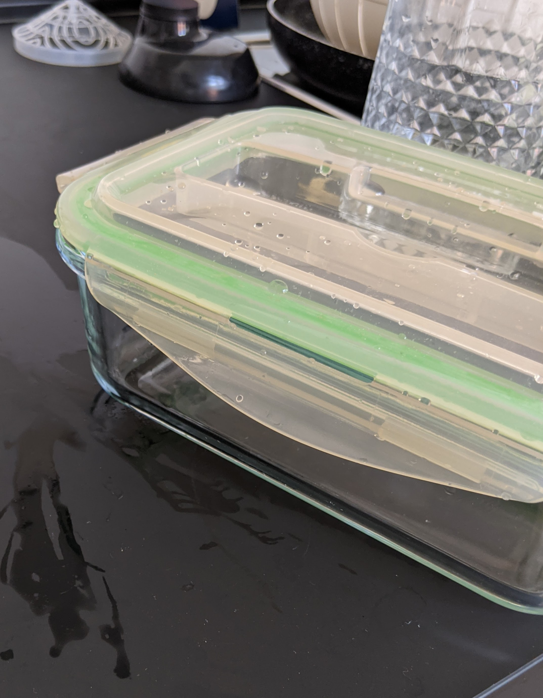
It was then that I realized that I want to capture that feeling. Feeling death through the crack of that opening.
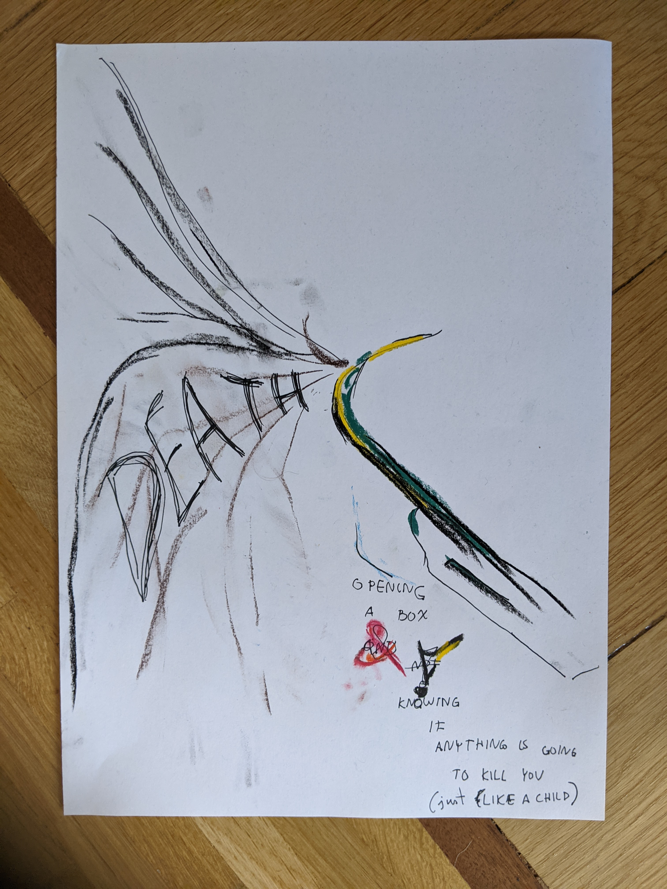
In the picture it looks like a whisper that slipped through the opening, I really liked it.
I wrote
Opening a box and not knowing if anything is going to kill you (just like a child)
.
The words "and" and "not" must have a lot of associations in my brain as a programmer. It felt wrong
that I did not use the canonical symbols for them. I drew an ampersand over "and" and an exclamation mark over "not",
and suddenly I could feel their color. It seems to happen a lot with punctuation marks.
Baby Hitler
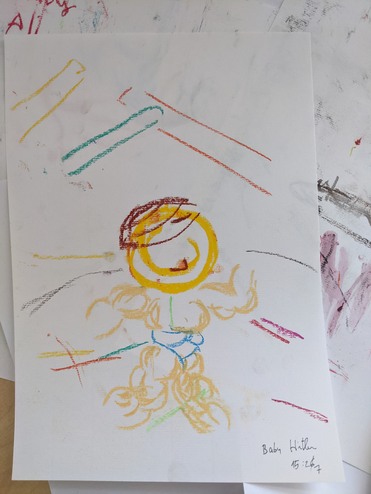
I drew a baby and somehow I associated the baby-hitler paradox. Capturing the chubbiness of babies was harder than expected.
I then noticed the chalks laying around the paper and wanted to capture those as some kind of self-referencing view.
Drawing the chalks was no fun.

I heated up some vegetable soup and I really wanted to capture the nature of a meal. The shiny spoon was challenging so I ended up writing
a hint on the bottom - "Cucchiaio" (spoon in italian). I noticed the font had a distinct spanish look, almost Puss in Boots. The "O" had the
right shape for the head of a spanish carnival character. I drew it a mustache and added a hat. The dress would be in a mostly white color with red details
just like "Puccinella". I remember this character being the villain in Pinocchio, but I don't know if the memory is true.
The red of the hat is a smashed strawberry.
The Eye
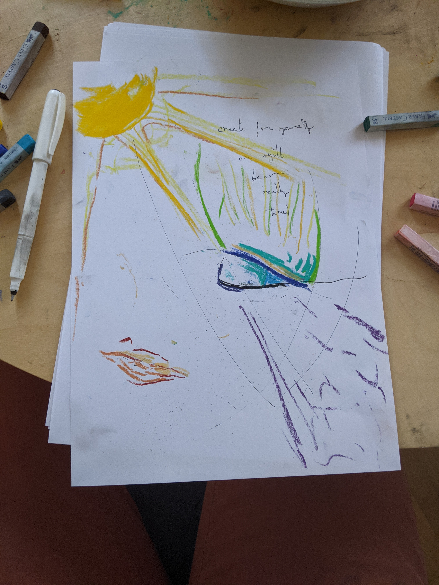
It's hard to tell what happened in this picture. It was a paper with pen lines and at some point I saw an eye in it. Can't really remember in which order the lines formed.
The combination of colors is incredibly beautiful to me now, but at the time it was just copying what was already on the paper.
It now has a "Mother Nature" feel, but it was definitely not my plan in that moment.
African music
I was listening to some music from Africa. At that moment it sounded like their language makes the process of expressing things much easier,
I was trying to formulate ideas to my brother in my language and it felt like a system of equations. Everything has to match with everything else.
The people in the music sounded like they had the ability to feel something and simply make a sound that corresponds to it.
In the last song of this playlist a man was singing by himself. It felt so ill. Why is he not with the others? He must be somehow weird.
I was mindblown by the beauty of this grape.
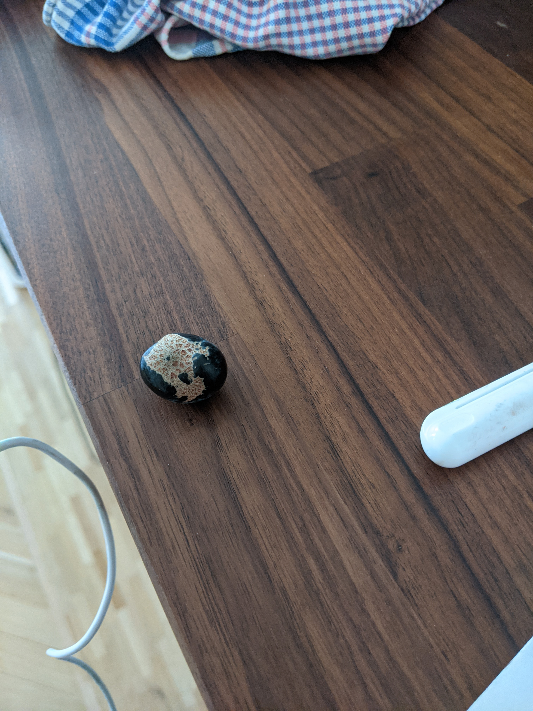
I kept it with me throughout the day. It was important to me like Wilson was to Tom Hanks.
I felt how soon species have to learn to estimate the size of things. The importance of things. You can pick between moving toward dominating the others
or spend the rest of the day analyzing two seeds on a strawberry.
Having unfocused eyes and getting lost in what I saw.
One moment I started hearing loud chanting. I got scared cause I haven't had hearing hallucinations before.
It was stronger and stronger until I realized it's probably coming from the window.
There was a protest outside. It was a weird being this high and having your house completely surrounded by
heavy-duty police units.
Eternal peace
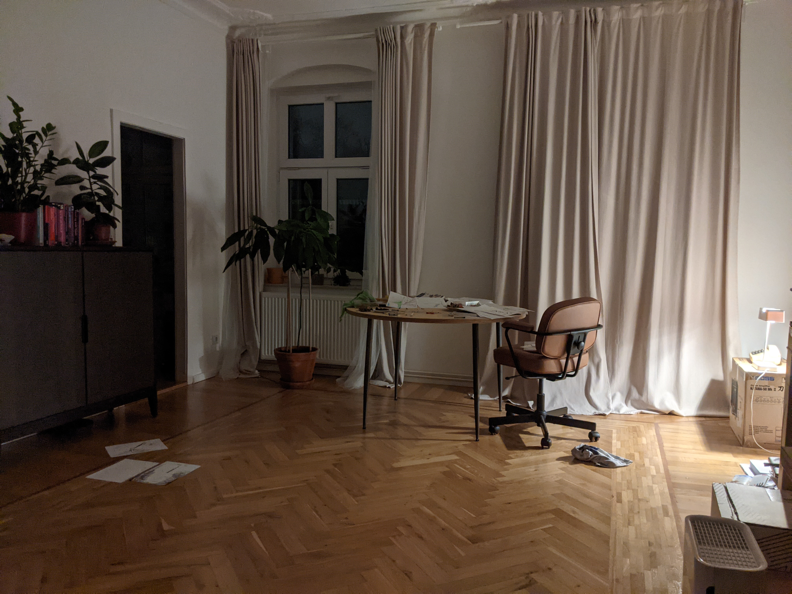
In the evening things were calm. The room had a beautiful light.
I took a look at what the world is up to. On twitter a gamedev shared
some
demo of a lighting system
. It showed a terrain car cruising in an artificial world of geometric shapes.
There was a sun that was preparing to set. The light had that distinct color that you see on a sunset by the sea.
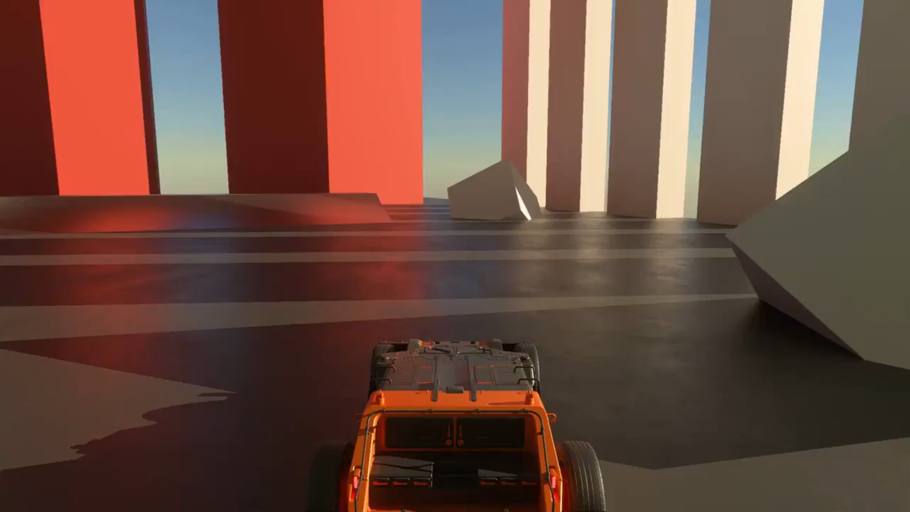
I had this strong desire to be that car. Just like how Zima Blue at the end of the story transforms back into a simple pool cleaning robot and spends the rest of its time enjoying the simplicity of that existence.
I wanted to be a small car in a universe with a never ending sunset all for myself.
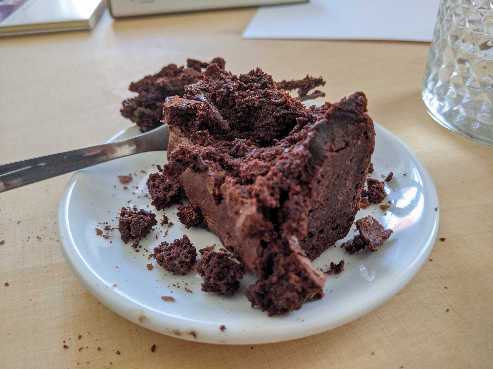